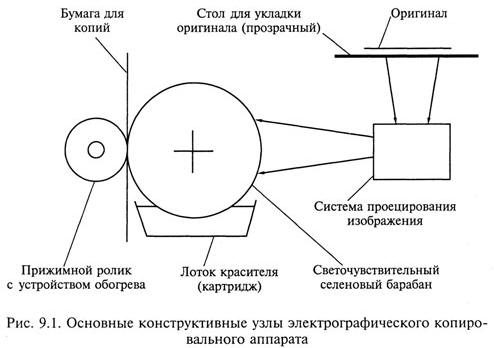
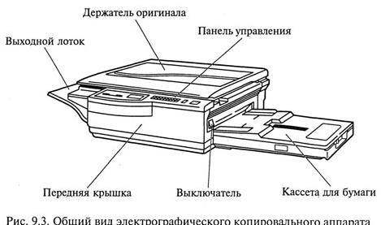
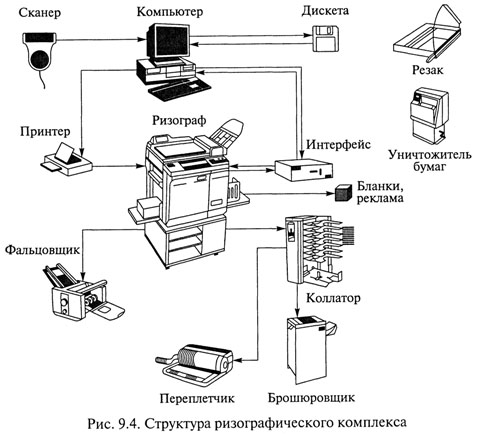
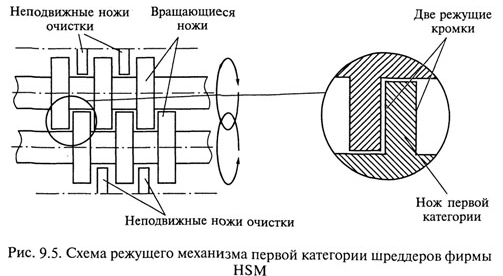
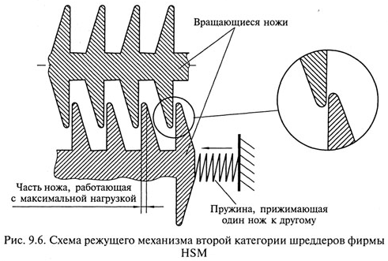

Идея безбумажной информатизации в различных направлениях деятельности зародилась во второй половине XX в. Однако и в начале XXI в. деловой мир насыщен именно информацией на твердых, бумажных носителях. По оценке экспертов, сотрудники деловых фирм теряют до 15% документации и тратят до 30% рабочего времени на поиски нужного документа на твердом носителе. В связи с этим устройства для работы с информацией на твердых носителях входят в состав комплекса технических средств информатизации. Типичными средствами работы с информацией на твердых носителях являются многочисленные устройства копировальной техники и устройства уничтожения информации на твердых носителях — шреддерах.
Средства копирования документации на твердых носителях достаточно разнообразны, они различаются как видом носителей копируемых документов (бумага, калька, прозрачная пленка), так и видом носителей, на которых создаются копии документов.
Виды бумаг для создания копий весьма разнообразны. Так, в разных типах копировальной техники применяются: обычная бумага, фотобумага, темнеющая под действием световых лучей; термобумага, темнеющая под действием тепловых лучей; диазобумага — светочувствительная бумага, на которой под действием мощных световых лучей темнеют участки, соответствующие изображению на оригинале; электрофотокалька, или пленка, на которой электроискровые разряды перфорируют микроскопические отверстия.
В зависимости от используемых видов бумаги копировальные технологии подразделяются на следующие группы:
Первым копировальным аппаратом принято считать мимеограф, созданный известным изобретателем Т.А.Эдисоном (1847—1931). В мимеографах использовались листовые трафареты с отверстиями, накладываемые на вращающийся барабан, содержащий жидкую краску. Копии получались за счет проникновения краски через отверстия трафарета на проходящие под барабаном листы бумаги. Этот принцип и в настоящее время используется для получения копий. Однако наиболее распространена в современном мире технология получения копий на обычной бумаге методом сухого электростатического переноса, или электрографическое копирование.
Метод сухого электростатического переноса был разработан Ч.Ф.Карлсоном (1906-1968), получившим патент на свое изобретение в 1935г. Оформив права на использование этого патента в 1947 г., фирма Haloid Company дала методу копирования название «ксерография», образованное от двух корней греческих слов: xeros (сухой) и graphein (писать). Этот термин впоследствии вошел в название компании, которая стала сначала называться Haloid Xerox, затем Xerox Corporation и, наконец, - The Document Company Xerox (Xerox).
 В настоящее время на рынке копировальной техники несмотря на несомненно ведущую роль фирмы Xerox широко представлены фирмы Canon, Ricoh, Sharp. Более 70 % мирового парка копировального оборудования составляют электрографические копировальные аппараты, посредством которых изготавливается свыше 50 % всех копий, получаемых в мире. При этом зачастую любые электрографические копировальные аппараты называют ксероксами, отдавая дань ведущей роли фирмы Xerox - родоначальницы данного вида копирования.
Принцип действия электрографического копировального аппарата во многом повторяет принцип действия лазерного принтера. Основные конструктивные узлы электрографического копировального аппарата показаны на рис. 9.1.
Электрографическое копирование включает в себя следующие этапы:
К основным достоинствам копирования с помощью электрографического аппарата относятся:
Электрографические аппараты по своему назначению и возможностям копирования можно разбить на пять групп:
Большинство моделей цветных ксероксов имеют невидимый код, распознаваемый при специальном освещении, или обладают способностью к смещению цвета в случае копирования банкнот. Кроме перечисленных, электрографические копировальные аппараты обладают следующими обобщенными техническими данными:
Сервисные возможности отдельных моделей  электрографических копировальных аппаратов:
Один из вариантов конструктивного решения электрографического копировального аппарата показан на рис. 9.3.
Многие современные электрографические копировальные аппараты имеют:
Термокопирование - самый оперативный способ копирования (десятки метров в минуту), позволяющий получить копию на специальной, достаточно дорогой термореактивной бумаге или на обычной бумаге, но через термокопировальную бумагу.
Термографическое копирование заключается в следующем: на документ-оригинал накладывается полупрозрачная термореактивная бумага чувствительным слоем к оригиналу. Затем через эту бумагу документ освещается интенсивным потоком тепловых лучей. Темные участки оригинала поглощают лучи и нагреваются, а светлые участки отражают тепловые лучи и поэтому нагреваются существенно меньше. Таким образом, тепловой рельеф несет информацию об оригинале. Тепловой поток от документа-оригинала передается прижатой к нему термореактивной бумаге, которая темнеет тем больше, чем больше нагрет участок оригинала.
Недостатки технологии термокопирования, связанные с невысоким качеством и малым сроком хранения копий, а также высокой стоимостью термореактивной бумаги, не способствуют ее широкому распространению.
Диазографическое копирование (светокопирование) — диазография, синькография. Применяется преимущественно для копирования болыпеформатных чертежей и технической документации на крупных предприятиях. Оригинал выполняется на светопроницаемой бумаге, кальке.
Процесс копирования состоит в экспонировании контактным способом, т. е. в освещении прозрачного оригинала, наложенного на светочувствительную диазобумагу, на которой темнеют участки, соответствующие изображению на оригинале. Изображение проявляется полусухим способом в вытяжных шкафах в парах растворителя (аммиака) или мокрым способом в щелочном растворе.
В настоящее время метод диазографического копирования используется достаточно редко, поскольку качество получаемых копий, так называемых «синек», невысокое, а процедура получения копий трудоемка, малопроизводительна и экологически опасна для человека и окружающей среды вследствие использования химических веществ для проявления.
Фотографическое копирование (фотокопирование) - наиболее давний способ копирования, обеспечивающий самое высокое качество, но требующий дорогих расходных материалов (в частности, фотобумаги, содержащей соли серебра) и длительного процесса получения копии (экспозиция, проявление, закрепление, промывка, сушка).
В зависимости от требований к размерам и качеству изображения фотографическое копирование может быть контактным и проекционным. Проекционное фотокопирование обеспечивает более высокое качество копии и, кроме того, позволяет в широких пределах изменять масштаб изображения. Для фотокопирования используются различные репродукционные аппараты и фотоувеличительные установки.
Фотографическое копирование используется в тех случаях, когда другие способы не могут обеспечить требуемое качество. Наиболее актуальной областью применения фотографического копирования является микрофильмирование документов и библиотечных фондов.
Электронографическое копирование (электроискровое копирование) основано на оптическом считывании документов и электроискровой регистрации информации на специальный носитель копии.
При электроискровом копировании фотодиоды преобразуют построчно проецируемое на них изображение документа в электрические сигналы, которые усиливаются и подаются на линейку пишущих игл. Между иглами и основанием аппарата (барабаном) проскакивают высоковольтные электрические разряды (искры), перфорирующие тончайшие отверстия в, носителе копии в участках, которые соответствуют темным участкам оригинала.
Копии выполняются в основном на специальной пленке и на термореактивной бумаге. Копии на пленке служат основой для последующего тиражирования документов средствами трафаретной печати. Электронографическое копирование наиболее широко и эффективно используется при подготовке высококачественных трафаретных печатных форм.
Для получения большого количества одинаковых копий используются копировальные устройства трафаретной печати. В недалеком прошлом трафаретная печать осуществлялась ротаторами - устройствами, для которых предварительно готовился трафарет. Для этого на специальной бумаге из прочных волокон, покрытых тонким слоем воска, - «восковке» печатался на пишущей машинке текст. В местах удара символов машинки воск отскакивал, оставляя сетку волокон. Затем подготовленная «восковка»-трафарет вставлялась в ротатор, образуя кольцо. Внутри кольца находился валик, смачиваемый типографской краской, которая через участки «восковки» с поврежденным восковым слоем с помощью дополнительного валика переносилась на бумагу. Участки бумаги, соответствующие местам на «восковке», по которым ударяли символы пишущей машинки, окрашивались. На каждом обороте кольца «восковки» из ротатора появлялся лист копии. Расходные материалы и сам ротатор были доступны и недороги.
К достоинствам трафаретной печати ротаторами следует отнести хорошее качество печати; возможность получения 400— 1500 оттисков с одного трафарета; относительную простоту изготовления трафаретов. Однако при трафаретной печати невозможно выполнять редактирование и необходимо использование нескольких трафаретов при многоцветной печати.
Перспективный путь развития трафаретной печати, использующий последние достижения цифровой электроники и существенно улучшающий все характеристики трафаретной печати, связан с электронотрафаретной печатью. Поскольку в России электронотрафаретная печать производится в основном с помощью копировальных аппаратов производства фирмы RISO, часто этот способ размножения документов называют ризографией.
Ризографы (дубликаторы) - новый тип копировально-множительной техники для офиса, совмещающий традиционную трафаретную печать с современными цифровыми методами изготовления и обработки электронных документов. Ризограф, подключенный к компьютеру через параллельный порт, может быть использован для оперативного создания, редактирования и размножения любых видов документов и полиграфических изданий.
 Ризограф был изобретен и создан в 1980 г. в Японии, а уже к началу 1995 г. более 70 % японских школ были оснащены ризографами. В России первые ризографы появились в 1992 г.
Процесс копирования на ризографе отличается высокой оперативностью и состоит из двух этапов: подготовки рабочей матрицы в течение 15-20 с и печати по матрице с высокой производительностью, обеспечивающей получение нескольких тысяч высококачественных оттисков за 10-20 мин.
При подготовке матрицы оригинал документа помещают на встроенный сканер, который считывает информацию, кодирует ее и создает соответствующий цифровой файл. После обработки специальной многослойной мастер-пленки термоголовкой, управляемой этим цифровым файлом, создается рабочая матрица, содержащая копируемое изображение или текст в виде микроотверстий во внешнем слое пленки. Затем рабочая матрица автоматически размещается на поверхности красящего цилиндра, внутри которого находится туба со специальным красителем. Краситель пропитывает внутренний слой пленки, и, таким образом, обработанная рабочая матрица используется как трафарет для тиражирования документа.
В процессе печати краситель из внутреннего слоя пленки под действием центробежной силы при вращении красящего цилиндра переносится через микроотверстия на лист обычной бумаги. С одной рабочей матрицы можно получить более 4000 оттисков без снижения качества.
В современных ризографах выполняются в автоматическом режиме не только все основные этапы, но даже отматывание с рулона отрезка мастер-пленки нужного размера, его отрезание, снятие с красящего барабана отработанной матрицы и ее удаление в приемник отработанных рабочих матриц
К достоинствам ризографа следует отнести:
Особо следует отметить высокую экономичность тиражирования на ризографе документов: если стоимость получения 10 копий, например, на ризографе и ксероксе почти одинакова, то изготовление 500 оттисков на ризографе в 6-8 раз дешевле.
Конструктивно ризографы выполняются в двух конфигурациях: роликовые и планшетные.
Роликовые, или протяжные, ризографы предназначены для работы только с отдельными листами, протягиванием их при считывании мимо фотоприемного устройства сканера, причем подача листов осуществляется в автоматическом режиме.
Планшетные ризографы позволяют копировать как листовые, так и сброшюрованные материалы.
Для более эффективного использования ризографы объединяют в единый комплекс технических средств информатизации, например, как показано на рис. 9.4.
При формировании комплекса ризограф подключают к компьютеру через параллельный порт, что позволяет превратить ризограф в высококачественный сканер с разрешающей способностью 400 dpi и дает возможность передать на компьютер изображение, отредактировать его, выбирая масштаб, и распечатать на ризографе. При подготовке документа с помощью любого текстового процессора можно распечатать его на ризографе со скоростью 130 копий в минуту.
Ризограф экологически безопасен, не требует специально подготовленных помещений и персонала, к работе готов сразу после подключения к сети.
Благодаря высокому качеству и удобной технологии, ризографический комплекс технических средств информатизации позволяет формировать и тиражировать информацию на твердых носителях, начиная от визитных карточек, бланков, рекламных проспектов и технической документации и заканчивая журнальной периодикой, брошюрами и книгами.
Цифровые технологии копирования - самое современное направление получения копий. Многие фирмы, специализирующиеся в области копировальной техники, выпускают цифровые копировальные аппараты, в частности Xerox, Ricoh.
Цифровой копировальный аппарат включает в себя:
Например, электронные копиры фирмы HP OfficeJet 590 и Pro 1150С интегрированы с цветным струйным принтером, сканером и факсимильным аппаратом. Для более эффективного редактирования информации возможен интерфейс с компьютером.
Цифровые технологии копирования позволяют:
При этом настройка и управление цифровых копировальных аппаратов не требуют специальной подготовки обслуживающего персонала.
Шреддеры (to shredd - размельчать, кромсать) - устройства для уничтожения документов.
Информация, содержащаяся в документах на твердых носителях, часто носит конфиденциальный характер. Небрежно оставленные, даже в смятом или разорванном виде, документы служат потенциальным источником неприятностей. Попав в руки заинтересованных лиц, такие документы могут стать причиной серьезного морального или финансового ущерба. В связи с этим во многих солидных организациях действуют инструкции о порядке обращения со служебными материалами и защите информации в электронном виде, а также фиксированной на бумаге и иных носителях (микрофильмах, магнитной ленте и дискетах и т.д.). Вместе с тем в ряде фирм с большим документооборотом остро стоит проблема утилизации отходов делопроизводства в виде документов на твердых носителях. Таким образом, проблема уничтожения документов на твердых носителях актуальна для всех без исключения организаций: правительственных учреждений, финансовых и юридических структур, производственных и торговых предприятий, издательств, информационных и рекламных агентств.
Существует три основных способа уничтожения документов: химический, термический и механический. Первые два связаны с определенными неудобствами и дополнительными финансовыми затратами на содержание отдельных помещений, оснащенных специальными системами фильтрации и вентиляции воздуха, противопожарной безопасности, специально подготовленного персонала, спецодежды. В связи с этим наибольшее распространение получил именно механический принцип «разрезания документов на части», реализуемый в шреддерах.
Современные уничтожители можно классифицировать по следующим критериям:
1-й уровень - для документов общего содержания. Допускается ширина полосы не более 12 мм неограниченной длины. Площадь фрагмента не более 2000 мм2;
2-й уровень - для внутренних документов с ограниченным доступом (ДСП). Ширина полосы не более 6 мм с неограниченной длиной. Площадь фрагмента не более 800 мм2;
3-й уровень - для конфиденциальных документов. Полоса не шире 2 мм и площадь не более 594 мм2, либо полоса не шире 4 мм, длина не более 80 мм и площадь фрагмента не более 320 мм2;
4-й уровень - для секретных документов. Ширина полосы не более 2 мм, длина не более 15 мм, площадь фрагмента 30 мм2;
5-й уровень - для документов под грифом «совершенно секретно». Полоса не шире 0,8 мм, длина не более 13 мм, общая площадь фрагмента не более 10 мм2;
Все шреддеры электромеханического типа содержат следующие основные узлы: механический привод, режущий механизм, контейнеры для уничтожаемых документов и отходов в виде бумажных полос или брикетов.
Режущие механизмы электромеханических шреддеров подразделяются на две категории. Механизм первой категории имеет монолитные вращающиеся дисковые ножи с режущими кромками с обеих сторон, как это показано на рис. 9.5. Резка осуществляется благодаря плотно подогнанным друг к другу ножам без использования дополнительного прижимного механизма (как в случае механизма второй категории). Сами ножи изготовляются из высоколегированной стали (технология Золинген), что само по себе гарантирует их высокую прочность и износостойкость. Кроме того, первоначальная заточка зубьев осуществляется лазерным методом, после закаливания стали. Это трудоемкий и дорогостоящий процесс, но именно благодаря нему гарантируется стабильная работа режущего механизма даже при попадании скрепок среди измельчаемых документов. Режущий механизм приводится в движение механизмом привода, который содержит двигатель и редуктор. Важнейшим преимуществом шреддеров с режущими механизмами первой категории является низкий уровень шума при работе.
Механизм второй категории оснащен монолитными вращающимися ножами, имеющими всего одну режущую кромку. Конструктивная схема режущего механизма второй категории шредцеров фирмы HSM показана на рис. 9.6. Толщина режущей кромки ножа меньше 0,5 мм. Режущий механизм не содержит ножей очистки, что иногда влечет за собой заклинивание двигателя при реверсе. Резка осуществляется за счет прижима ножей один к другому лишь благодаря пружине, жесткость которой может меняться со временем. Несмотря на меньшую надежность и долговечность узлов механизма по сравнению с механизмом первой категории, этот режущий механизм достаточно распространен в шреддерах неевропейской сборки, а также в некоторых моделях немецкого и итальянского производства благодаря малой себестоимости и простоте исполнения.
По назначению и конструктивному исполнению шреддеры подразделяются на персональные, офисные и промышленные.
Персональные шреддеры конструктивно выполняются с малообъемной корзиной или даже вовсе без корзины для уничтожаемой бумаги. В последнем случае можно использовать этот аппарат с любой корзиной или контейнером, куда может поступать уничтожаемый материал.
Сервисные функции персональных шреддеров обычно заключаются в автоматическом пуске/останове на основе механического или электронного датчика, световой индикации режимов работы и реверсе вращения ножей. Различные модели персональных шреддеров позволяют уничтожать документы второй -пятой степени секретности со скоростью, достигающей 90 мм/с, и снабжаются корзиной для сбора уничтожаемого материала емкостью 16-29 л.
Офисные шреддеры позволяют уничтожать документы со скрепками, могут быть использованы для уничтожения пластиковых карт, CD-дисков и дискет за счет использования режущего механизма первой категории. Закрытый корпус этих шреддеров имеет дверцу, открывающую доступ к контейнеру для уничтоженных документов. Корпус передвигается на колесах. К дополнительным сервисным функциям офисных шреддеров относится автоматическая блокировка пуска при незакрытой двери. При работе с документами второй—пятой степеней секретности многочисленные модели офисных шреддеров имеют производительность 120-217 мм/с и емкость корзины 215л.
Шреддеры промышленного применения предназначены для централизованного уничтожения документов в больших организациях, обладают высокой мощностью и производительностью, оснащаются внутренним ленточным транспортером. В процессе работы гарантируется безопасное выполнение всех операций за счет специально сконструированных органов управления и датчиков. Уничтожители данной серии имеют сенсорную панель управления, автоматическое отключение при переполненном или выдвинутом контейнере и застревании бумаги, световую индикацию режимов работы. Высокое качество режущего механизма позволяет уничтожать документы вместе с папками, а отдельные модели и со скоросшивателями типа «корона» со стальными дугами-креплениями без затупления ножей. Производительность некоторых моделей шреддеров промышленного применения 354 мм/с, а емкость корзины - 340 л.
На российском рынке представлено большое разнообразие шреддеров производства Германии, Индии, Японии, Китая. Наиболее популярны шреддеры фирм HSM (Германия) и Rexel (Англия).